每段结果
封面是第 0 帧（翻回正向），点封面或 3D 打开查看器。数值是该段各模型的 avg_pts，蓝色为该段最高。
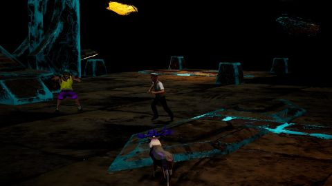
a2_s10_w3_cam1静态
A2_S10_ROCKETBOX_H1M2/WORLD_00000003 · 1135 query 点
s4d_train0.588
4RC0.387
Point4D0.462

a2_s11_w2_cam1静态
A2_S11_ROCKETBOX_H1M2/WORLD_00000002 · 578 query 点
s4d_train0.372
4RC0.315
Point4D0.134

a2_s24_w3_cam1静态
A2_S24_ROCKETBOX_H1M2/WORLD_00000003 · 918 query 点
s4d_train0.515
4RC0.199
Point4D0.239

a2_s25_w4_cam0跟拍
A2_S25_ROCKETBOX_H1M2/WORLD_00000004 · 5438 query 点
s4d_train0.262
4RC0.074
Point4D0.132

a2_s26_w4_cam1静态
A2_S26_ROCKETBOX_H1M2/WORLD_00000004 · 1092 query 点
s4d_train0.471
4RC0.210
Point4D0.269

a2_s26_w7_cam0跟拍
A2_S26_ROCKETBOX_H1M2/WORLD_00000007 · 1674 query 点
s4d_train0.815
4RC0.528
Point4D0.671
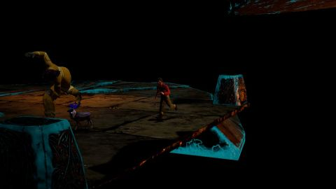
a2_s27_w1_cam1静态
A2_S27_ROCKETBOX_H1M2/WORLD_00000001 · 1270 query 点
s4d_train0.192
4RC0.170
Point4D0.138
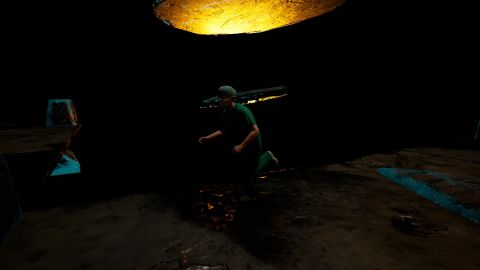
a2_s28_w3_cam0跟拍
A2_S28_ROCKETBOX_H1M2/WORLD_00000003 · 1298 query 点
s4d_train0.247
4RC0.100
Point4D0.373
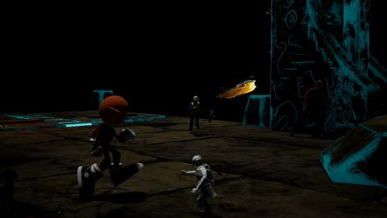
a2_s30_w2_cam1静态
A2_S30_ROCKETBOX_H1M2/WORLD_00000002 · 3620 query 点
s4d_train0.554
4RC0.388
Point4D0.366

a2_s8_w0_cam1静态
A2_S8_ROCKETBOX_H1M2/WORLD_00000000 · 746 query 点
s4d_train0.374
4RC0.238
Point4D0.201
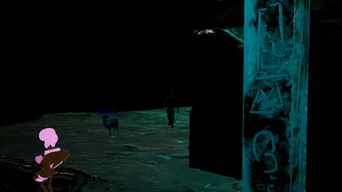
a3_s11_w7_cam1静态
A3_S11_ROCKETBOX_H1M2/WORLD_00000007 · 1328 query 点
s4d_train0.778
4RC0.518
Point4D0.473
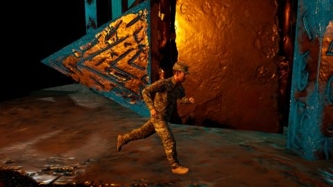
a3_s12_w3_cam0跟拍
A3_S12_ROCKETBOX_H1M2/WORLD_00000003 · 2522 query 点
s4d_train0.459
4RC0.309
Point4D0.092

a3_s12_w6_cam1静态
A3_S12_ROCKETBOX_H1M2/WORLD_00000006 · 637 query 点
s4d_train0.224
4RC0.218
Point4D0.213

a3_s14_w0_cam1静态
A3_S14_ROCKETBOX_H1M2/WORLD_00000000 · 1033 query 点
s4d_train0.873
4RC0.823
Point4D0.817

a3_s14_w4_cam1静态
A3_S14_ROCKETBOX_H1M2/WORLD_00000004 · 3015 query 点
s4d_train0.583
4RC0.461
Point4D0.553

a3_s26_w0_cam0跟拍
A3_S26_ROCKETBOX_H1M2/WORLD_00000000 · 4896 query 点
s4d_train0.359
4RC0.453
Point4D0.512

a3_s29_w1_cam1静态
A3_S29_ROCKETBOX_H1M2/WORLD_00000001 · 419 query 点
s4d_train0.558
4RC0.138
Point4D0.297
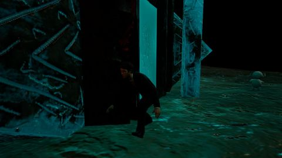
a3_s33_w2_cam0跟拍
A3_S33_ROCKETBOX_H1M2/WORLD_00000002 · 2148 query 点
s4d_train0.560
4RC0.278
Point4D0.311

fa_s10_w2_cam1静态
FA_S10_ROCKETBOX_H1M2/WORLD_00000002 · 4118 query 点
s4d_train0.710
4RC0.638
Point4D0.426
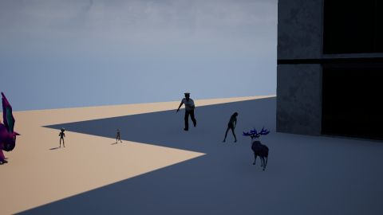
fa_s10_w3_cam1静态
FA_S10_ROCKETBOX_H1M2/WORLD_00000003 · 1117 query 点
s4d_train0.550
4RC0.350
Point4D0.372
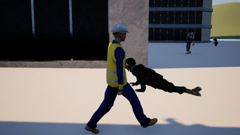
fa_s10_w7_cam0跟拍
FA_S10_ROCKETBOX_H1M2/WORLD_00000007 · 4040 query 点
s4d_train0.835
4RC0.156
Point4D0.601

fa_s12_w1_cam1静态
FA_S12_ROCKETBOX_H1M2/WORLD_00000001 · 457 query 点
s4d_train0.615
4RC0.188
Point4D0.374

fa_s12_w6_cam0跟拍
FA_S12_ROCKETBOX_H1M2/WORLD_00000006 · 1888 query 点
s4d_train0.284
4RC0.063
Point4D0.297

fa_s12_w6_cam1静态
FA_S12_ROCKETBOX_H1M2/WORLD_00000006 · 430 query 点
s4d_train0.297
4RC0.063
Point4D0.077

fa_s23_w5_cam1静态
FA_S23_ROCKETBOX_H1M2/WORLD_00000005 · 672 query 点
s4d_train0.634
4RC0.394
Point4D0.646

fa_s23_w6_cam0跟拍
FA_S23_ROCKETBOX_H1M2/WORLD_00000006 · 2564 query 点
s4d_train0.248
4RC0.054
Point4D0.284

fa_s23_w6_cam1静态
FA_S23_ROCKETBOX_H1M2/WORLD_00000006 · 872 query 点
s4d_train0.497
4RC0.253
Point4D0.137

fa_s26_w1_cam0跟拍
FA_S26_ROCKETBOX_H1M2/WORLD_00000001 · 1590 query 点
s4d_train0.520
4RC0.074
Point4D0.354
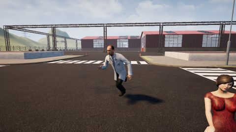
fa_s26_w4_cam0跟拍
FA_S26_ROCKETBOX_H1M2/WORLD_00000004 · 3890 query 点
s4d_train0.590
4RC0.348
Point4D0.493

fa_s26_w7_cam1静态
FA_S26_ROCKETBOX_H1M2/WORLD_00000007 · 1694 query 点
s4d_train0.703
4RC0.419
Point4D0.641

fa_s30_w0_cam0跟拍
FA_S30_ROCKETBOX_H1M2/WORLD_00000000 · 2682 query 点
s4d_train0.681
4RC0.270
Point4D0.505

fa_s32_w2_cam0跟拍
FA_S32_ROCKETBOX_H1M2/WORLD_00000002 · 2069 query 点
s4d_train0.175
4RC0.236
Point4D0.213
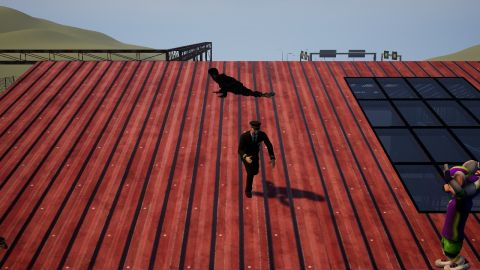
fa_s32_w2_cam1静态
FA_S32_ROCKETBOX_H1M2/WORLD_00000002 · 1793 query 点
s4d_train0.453
4RC0.286
Point4D0.400

fa_s32_w4_cam0跟拍
FA_S32_ROCKETBOX_H1M2/WORLD_00000004 · 2898 query 点
s4d_train0.368
4RC0.077
Point4D0.065
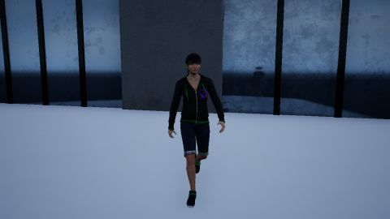
fa_s32_w5_cam0跟拍
FA_S32_ROCKETBOX_H1M2/WORLD_00000005 · 2430 query 点
s4d_train0.924
4RC0.166
Point4D0.815
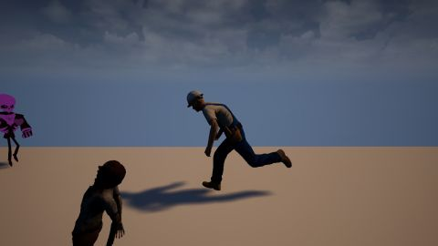
fa_s32_w6_cam0跟拍
FA_S32_ROCKETBOX_H1M2/WORLD_00000006 · 3551 query 点
s4d_train0.446
4RC0.211
Point4D0.211
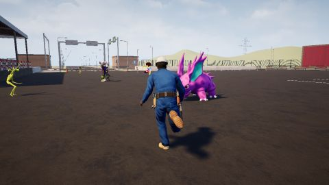
fa_s33_w6_cam0跟拍
FA_S33_ROCKETBOX_H1M2/WORLD_00000006 · 3207 query 点
s4d_train0.310
4RC0.318
Point4D0.308

fv_s27_w1_cam1静态
FV_S27_ROCKETBOX_H1M2/WORLD_00000001 · 928 query 点
s4d_train0.577
4RC0.412
Point4D0.500
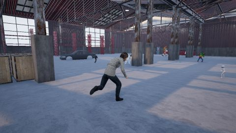
fv_s28_w4_cam0跟拍
FV_S28_ROCKETBOX_H1M2/WORLD_00000004 · 1605 query 点
s4d_train0.162
4RC0.071
Point4D0.065
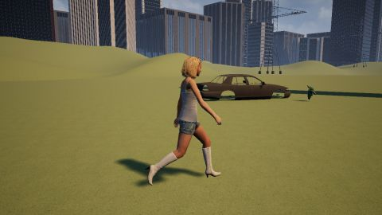
fv_s34_w0_cam0跟拍
FV_S34_ROCKETBOX_H1M2/WORLD_00000000 · 2822 query 点
s4d_train0.506
4RC0.088
Point4D0.127

fv_s35_w3_cam0跟拍
FV_S35_ROCKETBOX_H1M2/WORLD_00000003 · 2766 query 点
s4d_train0.194
4RC0.103
Point4D0.442
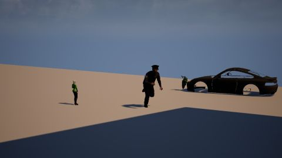
fv_s35_w4_cam1静态
FV_S35_ROCKETBOX_H1M2/WORLD_00000004 · 2353 query 点
s4d_train0.212
4RC0.138
Point4D0.048

fv_s7_w2_cam0跟拍
FV_S7_ROCKETBOX_H1M2/WORLD_00000002 · 2999 query 点
s4d_train0.162
4RC0.051
Point4D0.353

fv_s8_w3_cam0跟拍
FV_S8_ROCKETBOX_H1M2/WORLD_00000003 · 3712 query 点
s4d_train0.652
4RC0.066
Point4D0.374

fv_s9_w2_cam1静态
FV_S9_ROCKETBOX_H1M2/WORLD_00000002 · 1046 query 点
s4d_train0.566
4RC0.408
Point4D0.336
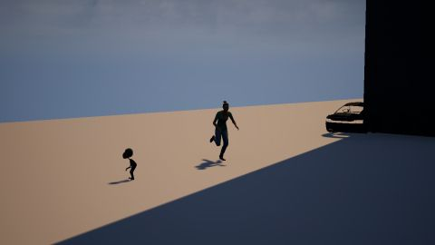
fv_s9_w3_cam1静态
FV_S9_ROCKETBOX_H1M2/WORLD_00000003 · 962 query 点
s4d_train0.295
4RC0.073
Point4D0.079

nk_s23_w3_cam0跟拍
NK_S23_ROCKETBOX_H1M2/WORLD_00000003 · 4330 query 点
s4d_train0.159
4RC0.338
Point4D0.404

nk_s24_w6_cam1静态
NK_S24_ROCKETBOX_H1M2/WORLD_00000006 · 64 query 点
s4d_train0.816
4RC0.684
Point4D0.567
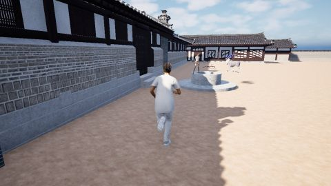
nk_s25_w3_cam0跟拍
NK_S25_ROCKETBOX_H1M2/WORLD_00000003 · 1343 query 点
s4d_train0.407
4RC0.185
Point4D0.404
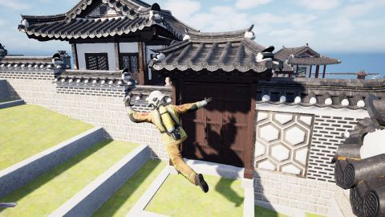
nk_s25_w4_cam0跟拍
NK_S25_ROCKETBOX_H1M2/WORLD_00000004 · 1712 query 点
s4d_train0.291
4RC0.163
Point4D0.083
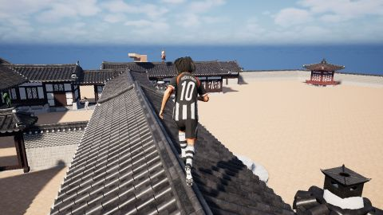
nk_s27_w3_cam0跟拍
NK_S27_ROCKETBOX_H1M2/WORLD_00000003 · 1897 query 点
s4d_train0.148
4RC0.100
Point4D0.250
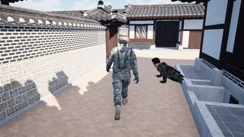
nk_s28_w0_cam0跟拍
NK_S28_ROCKETBOX_H1M2/WORLD_00000000 · 2375 query 点
s4d_train0.731
4RC0.631
Point4D0.643

nq_s10_w7_cam1静态
NQ_S10_ROCKETBOX_H1M2/WORLD_00000007 · 279 query 点
s4d_train0.717
4RC0.315
Point4D0.381

nq_s23_w2_cam0跟拍
NQ_S23_ROCKETBOX_H1M2/WORLD_00000002 · 1829 query 点
s4d_train0.253
4RC0.084
Point4D0.046

nq_s23_w2_cam1静态
NQ_S23_ROCKETBOX_H1M2/WORLD_00000002 · 1046 query 点
s4d_train0.360
4RC0.440
Point4D0.161
nq_s26_w3_cam0跟拍
NQ_S26_ROCKETBOX_H1M2/WORLD_00000003 · 719 query 点
s4d_train0.309
4RC0.048
Point4D0.035

nq_s26_w6_cam0跟拍
NQ_S26_ROCKETBOX_H1M2/WORLD_00000006 · 1769 query 点
s4d_train0.164
4RC0.175
Point4D0.055
nq_s26_w7_cam1静态
NQ_S26_ROCKETBOX_H1M2/WORLD_00000007 · 1422 query 点
s4d_train0.399
4RC0.437
Point4D0.472

nq_s27_w5_cam0跟拍
NQ_S27_ROCKETBOX_H1M2/WORLD_00000005 · 2042 query 点
s4d_train0.600
4RC0.606
Point4D0.428

nq_s28_w5_cam0跟拍
NQ_S28_ROCKETBOX_H1M2/WORLD_00000005 · 2504 query 点
s4d_train0.552
4RC0.133
Point4D0.349

nq_s29_w7_cam0跟拍
NQ_S29_ROCKETBOX_H1M2/WORLD_00000007 · 3481 query 点
s4d_train0.853
4RC0.326
Point4D0.127

nq_s29_w7_cam1静态
NQ_S29_ROCKETBOX_H1M2/WORLD_00000007 · 1639 query 点
s4d_train0.623
4RC0.356
Point4D0.520

nq_s30_w2_cam1静态
NQ_S30_ROCKETBOX_H1M2/WORLD_00000002 · 637 query 点
s4d_train0.351
4RC0.134
Point4D0.085
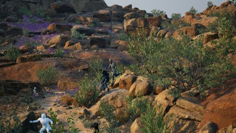
nq_s31_w1_cam1静态
NQ_S31_ROCKETBOX_H1M2/WORLD_00000001 · 654 query 点
s4d_train0.481
4RC0.447
Point4D0.395
nq_s31_w5_cam0跟拍
NQ_S31_ROCKETBOX_H1M2/WORLD_00000005 · 2347 query 点
s4d_train0.759
4RC0.570
Point4D0.427

nq_s32_w3_cam0跟拍
NQ_S32_ROCKETBOX_H1M2/WORLD_00000003 · 3598 query 点
s4d_train0.452
4RC0.134
Point4D0.172

nq_s7_w1_cam0跟拍
NQ_S7_ROCKETBOX_H1M2/WORLD_00000001 · 3415 query 点
s4d_train0.350
4RC0.063
Point4D0.033
nq_s7_w1_cam1静态
NQ_S7_ROCKETBOX_H1M2/WORLD_00000001 · 20843 query 点
s4d_train0.104
4RC0.085
Point4D0.203
nq_s7_w3_cam0跟拍
NQ_S7_ROCKETBOX_H1M2/WORLD_00000003 · 1958 query 点
s4d_train0.590
4RC0.061
Point4D0.045

nq_s7_w3_cam1静态
NQ_S7_ROCKETBOX_H1M2/WORLD_00000003 · 2190 query 点
s4d_train0.595
4RC0.618
Point4D0.666

nq_s8_w0_cam0跟拍
NQ_S8_ROCKETBOX_H1M2/WORLD_00000000 · 1644 query 点
s4d_train0.591
4RC0.245
Point4D0.144
nq_s8_w3_cam0跟拍
NQ_S8_ROCKETBOX_H1M2/WORLD_00000003 · 1328 query 点
s4d_train0.168
4RC0.107
Point4D0.042

nq_s8_w4_cam1静态
NQ_S8_ROCKETBOX_H1M2/WORLD_00000004 · 508 query 点
s4d_train0.321
4RC0.287
Point4D0.385
nq_s8_w5_cam1静态
NQ_S8_ROCKETBOX_H1M2/WORLD_00000005 · 615 query 点
s4d_train0.698
4RC0.089
Point4D0.599

ru_s9_w1_cam0跟拍
RU_S9_ROCKETBOX_H1M2/WORLD_00000001 · 7801 query 点
s4d_train0.610
4RC0.460
Point4D0.651
ruc3_s10_w0_cam0跟拍
RUC3_S10_ROCKETBOX_H1M2/WORLD_00000000 · 10348 query 点
s4d_train0.793
4RC0.500
Point4D0.719

ruc3_s7_w0_cam0跟拍
RUC3_S7_ROCKETBOX_H1M2/WORLD_00000000 · 8445 query 点
s4d_train0.724
4RC0.480
Point4D0.774
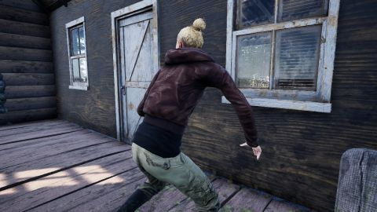
ruc3_s9_w1_cam0跟拍
RUC3_S9_ROCKETBOX_H1M2/WORLD_00000001 · 7801 query 点
s4d_train0.635
4RC0.466
Point4D0.673
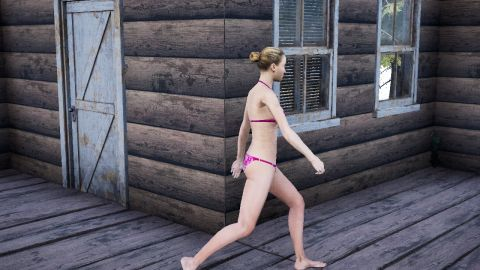
ruc5_s23_w0_cam1静态
RUC5_S23_ROCKETBOX_H1M2/WORLD_00000000 · 3887 query 点
s4d_train0.759
4RC0.694
Point4D0.718
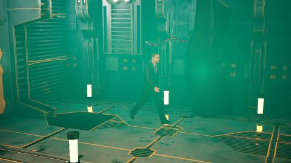
sf_s10_w5_cam1静态
SF_S10_ROCKETBOX_H1M2/WORLD_00000005 · 1151 query 点
s4d_train0.746
4RC0.625
Point4D0.613

sf_s20_w0_cam0跟拍
SF_S20_ROCKETBOX_H1M2/WORLD_00000000 · 7779 query 点
s4d_train0.843
4RC0.357
Point4D0.708

sfc3_s10_w5_cam1静态
SFC3_S10_ROCKETBOX_H1M2/WORLD_00000005 · 1692 query 点
s4d_train0.661
4RC0.430
Point4D0.460
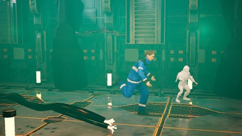
sfc3_s16_w2_cam1静态
SFC3_S16_ROCKETBOX_H1M2/WORLD_00000002 · 2322 query 点
s4d_train0.495
4RC0.351
Point4D0.363

sfc3_s18_w2_cam1静态
SFC3_S18_ROCKETBOX_H1M2/WORLD_00000002 · 3586 query 点
s4d_train0.639
4RC0.397
Point4D0.261
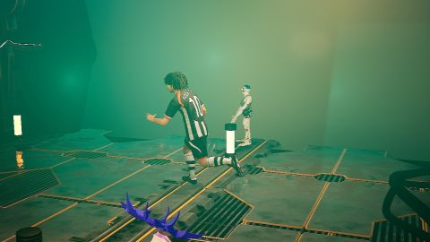
sfc5_s23_w1_cam1静态
SFC5_S23_ROCKETBOX_H1M2/WORLD_00000001 · 2161 query 点
s4d_train0.275
4RC0.344
Point4D0.212
sfc5_s26_w3_cam1静态
SFC5_S26_ROCKETBOX_H1M2/WORLD_00000003 · 1858 query 点
s4d_train0.496
4RC0.421
Point4D0.477

sfc5_s27_w0_cam1静态
SFC5_S27_ROCKETBOX_H1M2/WORLD_00000000 · 1740 query 点
s4d_train0.789
4RC0.583
Point4D0.706

sfc5_s27_w3_cam1静态
SFC5_S27_ROCKETBOX_H1M2/WORLD_00000003 · 5969 query 点
s4d_train0.533
4RC0.429
Point4D0.453
sfc5_s31_w3_cam0跟拍
SFC5_S31_ROCKETBOX_H1M2/WORLD_00000003 · 8063 query 点
s4d_train0.395
4RC0.400
Point4D0.516

sfc5_s32_w2_cam0跟拍
SFC5_S32_ROCKETBOX_H1M2/WORLD_00000002 · 8534 query 点
s4d_train0.350
4RC0.146
Point4D0.266
sfc5_s38_w1_cam0跟拍
SFC5_S38_ROCKETBOX_H1M2/WORLD_00000001 · 7478 query 点
s4d_train0.490
4RC0.201
Point4D0.529

sfc5_s41_w0_cam0跟拍
SFC5_S41_ROCKETBOX_H1M2/WORLD_00000000 · 10216 query 点
s4d_train0.885
4RC0.380
Point4D0.785

sfc5_s47_w1_cam1静态
SFC5_S47_ROCKETBOX_H1M2/WORLD_00000001 · 2618 query 点
s4d_train0.582
4RC0.590
Point4D0.548

sfc5_s49_w1_cam0跟拍
SFC5_S49_ROCKETBOX_H1M2/WORLD_00000001 · 7994 query 点
s4d_train0.572
4RC0.206
Point4D0.246

sfc5_s50_w0_cam1静态
SFC5_S50_ROCKETBOX_H1M2/WORLD_00000000 · 6146 query 点
s4d_train0.864
4RC0.628
Point4D0.386

sfc5_s52_w1_cam1静态
SFC5_S52_ROCKETBOX_H1M2/WORLD_00000001 · 4007 query 点
s4d_train0.571
4RC0.545
Point4D0.585

sfc5_s53_w0_cam0跟拍
SFC5_S53_ROCKETBOX_H1M2/WORLD_00000000 · 6986 query 点
s4d_train0.873
4RC0.434
Point4D0.762

sfc5_s53_w0_cam1静态
SFC5_S53_ROCKETBOX_H1M2/WORLD_00000000 · 1914 query 点
s4d_train0.812
4RC0.541
Point4D0.642

sfc5_s53_w2_cam1静态
SFC5_S53_ROCKETBOX_H1M2/WORLD_00000002 · 3281 query 点
s4d_train0.569
4RC0.449
Point4D0.535
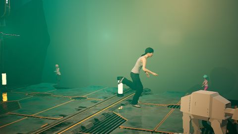
sfc5_s54_w6_cam1静态
SFC5_S54_ROCKETBOX_H1M2/WORLD_00000006 · 3206 query 点
s4d_train0.609
4RC0.546
Point4D0.552